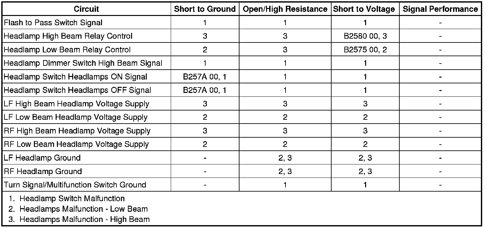

Lights On Indicator Malfunction
Lights On Indicator Malfunction
Diagnostic Instructions
* Perform the Diagnostic System Check - Vehicle (Initial Inspection and Diagnostic Overview) prior to using this diagnostic procedure.
* Review Strategy Based Diagnosis (Initial Inspection and Diagnostic Overview) for an overview of the diagnostic approach.
* Diagnostic Procedure Instructions (Initial Inspection and Diagnostic Overview)provides an overview of each diagnostic category.
Diagnostic Fault Information

Circuit/System Description
With the headlamp switch in the ON position, the headlamp switch headlamp ON signal circuit is grounded through the turn signal/multifunction switch at G200. In response to this input, the body control module (BCM) provides ground to either the headlamp low beam relay control circuit or the headlamp high beam relay control circuit. The position of the headlamp dimmer switch determines which relay coil has ground. The BCM supplies ground to the relay coil circuits, if the headlamps are necessary. The underhood fuse block supplies battery positive voltage to the relay coil and switch circuits. When the headlamp high beam relay coil is energized, current flows through the LT HI BEAM and the RT HI BEAM fuses to the high beam headlamps. With the headlamp dimmer switch in the high beam position the BCM sends a message via GMLAN serial data to the instrument panel cluster (IPC) requesting the IPC to illuminate the high beam indicator. The BCM will also request the IPC to turn on the LIGHTS ON INDICATOR located in the driver information center (DIC) anytime the headlamps are ON and the ignition is OFF or the driver door is opened.
Diagnostic Aids
This diagnostic procedure assumes that the headlamps operate as described in Exterior Lighting Systems Description and Operation (Exterior Lighting Systems Description and Operation) .
Reference Information
Schematic Reference
Instrument Cluster Schematics (Instrument Cluster Schematics)
Connector End View Reference
Component Connector End Views (Connector Views)
Description and Operation
Exterior Lighting Systems Description and Operation (Exterior Lighting Systems Description and Operation)
Electrical Information Reference
* Circuit Testing (Component Tests and General Diagnostics)
* Connector Repairs (Component Tests and General Diagnostics)
* Testing for Intermittent Conditions and Poor Connections (Component Tests and General Diagnostics)
* Wiring Repairs (Component Tests and General Diagnostics)
Scan Tool Reference
Control Module References (Programming and Relearning)
Circuit/System Testing
Ignition ON, with a scan tool perform the display test for the instrument panel cluster (IPC) and observe the lights on indicator.
If the lights on indicator does not illuminate during the test or remains illuminated at all times, replace the IPC.
If the lights on indicator illuminates during the test, replace the BCM.
Repair Instructions
Perform the Diagnostic Repair Verification (Verification Tests) after completing the diagnostic procedure.
Control Module References (Programming and Relearning)for BCM or IPC replacement, setup, and programming